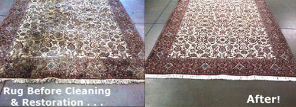
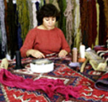
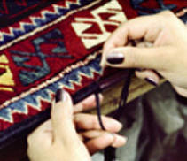
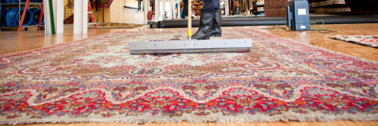

Leave your rug cleaning to the experts! At Bear Carpet Care, we know everything there is to know about cleaning, repairing, and restoring all types of rugs. Whether you own a handwoven antique Persian or a contemporary Shag rug, we clean each piece with thoughtful care based on its fiber, weave, and dye composition.



Our master craftspeople can perform nearly any repair. From fringe work to structural restorations, we serve both antique and contemporary rugs with techniques like:
We offer affordable machine repair options when handwork isn't required. Trust Bear Carpet Care to restore beauty and extend the life of your treasured rugs.

We're here for you. Call Today!
Get A Quote
"Incredible service! Was contemplating getting new carpet, but your cleaning brought our living room back to life. Clean, fresh and nice, Thank you!"
Yes. We offer free pick-up and delivery for all rug cleaning orders in the Harrisburg, PA area. We handle your rugs with care from your door to our facility and back.
We clean all types including Oriental, Persian, Turkish, Indian, Chinese, Karastan, braided, shag, and machine-made rugs. We work with wool, silk, cotton, and synthetic fiber rugs of all sizes.
Most rugs are cleaned and returned within 5 to 7 business days. Timelines vary based on size, fiber type, and the level of soiling or repair work required.
Yes. We offer reweaving, moth damage repair, fringe repair and replacement, renapping, color retouching, machine serging, binding, and size reduction for both antique and contemporary rugs.
Yes. We assess each rug individually by fiber content, weave type, and dye composition before selecting a cleaning method. Antique and hand-woven rugs receive specialized, gentle treatment to protect their value.
Providing safe, deep-clean upholstery care across Central Pennsylvania, including Harrisburg, York, Lancaster, Lebanon, and Hershey.
Mon - Fri: 8am - 7pm
Saturday: 10am - 5pm
Sunday: 10am - 3pm
(717) 454-7347
bearcarpetcarepa@gmail.com
© 2026
Bear Carpet Care. All Rights Reserved.
Designed by HTML Codex and Maintained by
WebEaze.